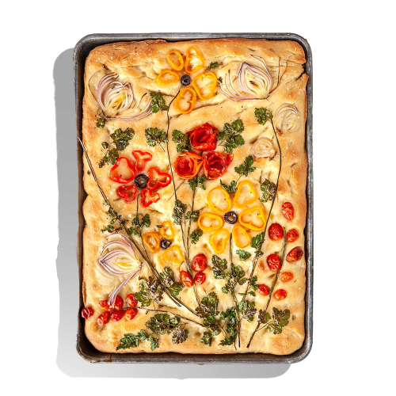

Also called "Botanical Focaccia", this recipe is both delicious and beautiful. Originally created by Instagrammer Diane Morrisey, this recipe has reached Internet popularity. This bread is also incerdibly easy to make, but still yields a chewy and tender result.
Proofing yeast activates this microorganism and gets it ready to use in your bread. To do this, dissolve a packet of yeast in a half-cup of warm water (about 100-110ºF) mixed with a tablespoon of honey. Stir and let this mix stand for five minutes or until it looks frothy. That’s how you know the yeast is alive and ready to be added into the mix. If it doesn’t bubble, start over and make sure your water isn’t too hot.
In a large mixing bowl, add the flour, 1/4 cup olive oil, salt, water and yeast mixture and stir until smooth. You can use your stand mixer if you like, but this dough will come together easily mixing by hand. In fact, this is the perfect time to break out your dough whisk—just one of our favorite bread-baking tools.
When your dough is well mixed, scrape down the sides of the bowl, cover and let the dough rise until it doubles in size. This should take about 45 minutes.
While the bread proofs, prep your baking pan. Brush a 13×9 pan—our test kitchen used a metal pan here—with a tablespoon of olive oil.
When your pan is prepped, gently scrape the focaccia dough into the pan. Oil your hands and spread dough so it covers the bottom of the pan.
After stretching the dough, make indentations using your fingertips. These divots will catch all the oil and gives focaccia its signature appearance
Now is the time to head out to your garden and see what fresh veggies are growing. Use cherry tomatoes, peppers and fresh herbs to decorate the top of the bread. You can even use a few items from the fridge like olives.
After you’ve decorated, let the bread proof again. This time just for 30 to 40 minutes.
Bake the focaccia in a 425ºF oven for 20 to 25 minutes. The bread should look golden brown. This bread is best served warm, so slice into it right away! And if you can’t finish it in one go, it will keep for a few days on the counter; just keep it wrapped up or in an airtight container. You can freeze bread, too.